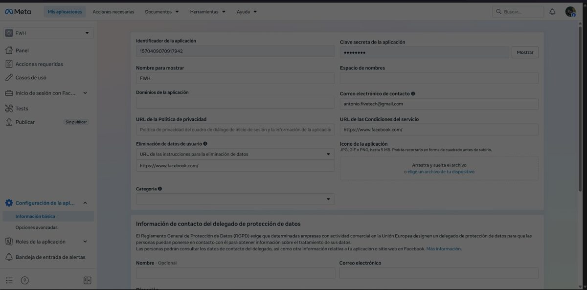
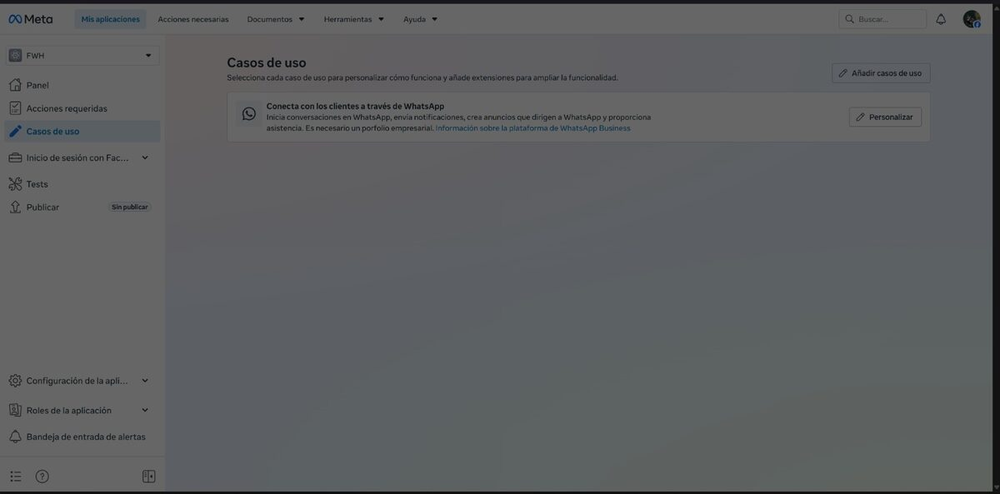
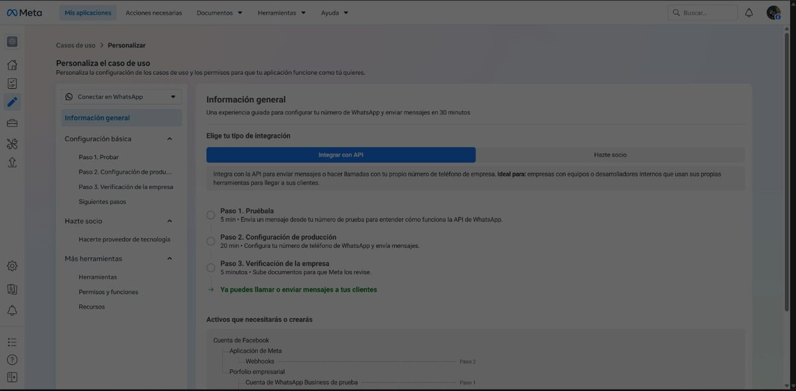
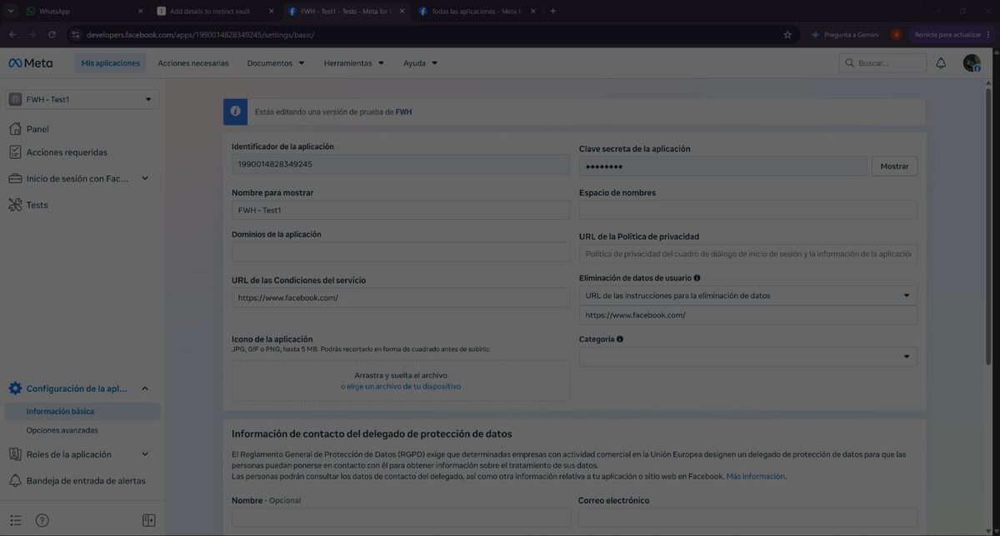

Guía de configuración de TWhatsApp
Guía paso a paso para llegar de cero a tu primer mensaje de WhatsApp enviado con TWhatsApp. Toda la configuración en Meta lleva unos 15 minutos y no necesita verificación de empresa ni revisión de la app mientras pruebas con tu propio número de teléfono.
1. Crea tu app de Meta
Entra en developers.facebook.com
e inicia sesión con tu cuenta de Facebook. Abre Mis aplicaciones (arriba a la
derecha) y elige Crear app. Dale un nombre, por ejemplo FWH, y
completa el asistente.
Cuando esté creada, abre Configuración de la aplicación > Información básica en el menú de la izquierda. Esta página muestra tu identificador de la aplicación (App ID) - no lo necesitas para TWhatsApp, pero identifica la app:

Nota: Meta avisa de un límite de 15 apps en cuentas de desarrollador nuevas sin verificar. Si tu cuenta es antigua, normalmente puedes crear la app igualmente, como en este ejemplo.
2. Añade el caso de uso de WhatsApp
En el menú izquierdo de la app abre Casos de uso, pulsa Añadir casos de uso y añade "Conecta con los clientes a través de WhatsApp". Después pulsa Personalizar en ese caso de uso:

3. Consigue tu token y tu Phone Number ID
Dentro del caso de uso de WhatsApp, el menú de la izquierda muestra el grupo Configuración básica. Cuando te pregunte por el tipo de integración, elige Integrar con API:

Abre Paso 1. Probar. Esta pantalla tiene todo lo que necesita TWhatsApp:
- Token de acceso temporal - válido durante 24 horas. Este es tu
cToken. - Identificador de número de teléfono - el ID numérico del número de prueba. Este es tu
cPhoneId. - Remitente de prueba - un número de Meta (
+1 555 xxx xxxx) desde el que salen tus mensajes durante las pruebas. - Destinatario - añade aquí tu propio número y confírmalo con el código SMS que te envía Meta. En modo de prueba solo puedes escribir a destinatarios registrados.
Guarda el token a buen recaudo. No lo pegues nunca en chats ni correos: cópialo directamente a un gestor de contraseñas o a tu programa de pruebas en tu PC. Si se escapa uno, genera otro en la misma pantalla y olvida el anterior.
Opcional: Meta también crea una versión de prueba de tu app
(<tu app> - Test1) con su propia página de configuración. Puedes usarla para
experimentar sin tocar la app principal:

4. Envía el mensaje de prueba desde la página de Meta
En la misma pantalla del Paso 1. Probar, pulsa el botón
Enviar mensaje de Meta. Meta entrega un mensaje de plantilla
hello_world desde el remitente de prueba a tu número registrado. Si te llega, tu
app, el remitente y el destinatario funcionan - todo lo demás pasa ya en tu código.
5. Envía desde Harbour con TWhatsApp
En tu PC, abre el sample de FWH en samples/whatsapp/twhatsapp.prg y pon tus dos
valores:
oWhatsApp := TWhatsApp():New()
oWhatsApp:cToken := "PEGA-AQUI-TU-TOKEN" // token temporal del Paso 1
oWhatsApp:cPhoneId := "PEGA-AQUI-TU-PHONE-NUMBER-ID" // phone number ID del Paso 1
oWhatsApp:SendText( "34600000000", "Hola desde FiveWin!" )Compila y ejecuta el sample. El mensaje sale de tu propio código Harbour - ese es el momento bueno. Para la referencia completa de miembros, mira la página de la clase TWhatsApp.
6. Siguientes pasos
- Token permanente: el token temporal caduca en 24 horas. Para producción,
crea un usuario del sistema en la configuración de Meta Business, asígnale la app y los
activos de WhatsApp, y genera un token de acceso permanente con el permiso
whatsapp_business_messaging. - Tu propio número remitente: el paso 2 de la Configuración básica (Configuración de producción) registra tu número de empresa y su nombre visible.
- Verificación de la empresa: solo hace falta para escribir a cualquier usuario a gran escala (paso 3). Probar con tus propios números registrados funciona sin ella.
- Un alta más cómoda para tus usuarios: si distribuyes aplicaciones FWH a tus propios clientes, mira lo de ser Tech Provider de Meta: con Embedded Signup tus usuarios hacen toda esta configuración con un par de clics desde tu app, en vez de recorrerse el panel de Meta a mano.